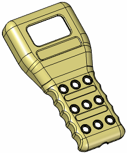
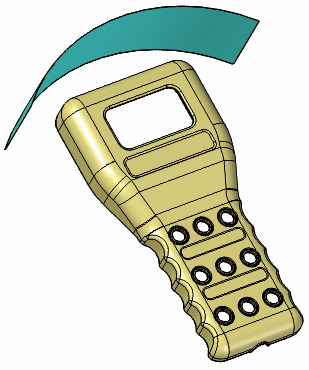
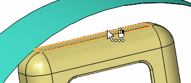
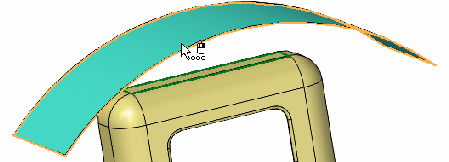
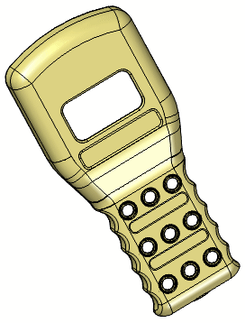

Activity: Replace faces
1: Open part file
-
Open replace_face.par.

2: Display the replacement
-
Turn on the face labelled Extrude 1.

3: Replace the top face of the scanner
On the Surfacing tab→Modify Surfaces group, choose the Replace Face command .
Select the face shown as the face to be replaced. Click the Accept button on the command bar.

Select the extruded face, named Extrude 1, as the replacement face.


Click Finish.
Save and close the file.
4: Summary
In this activity you learned how to replace a model face with another face. As the face is replaced, all connecting faces adjust to the replaced face.
-
Click the Close button in the upper-right corner of this activity window.